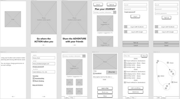

What's He Building in There?

TeamTrip: Group Travel Booking
Improving group travel planning and booking by involving everyone in the process while allowing personal itineraries to connect and diverge.

All Pets All Vets: Veterinarian Search
Providing the search tools, filters, and information that people need to find the right vet for any pet&emdash;whether it's a dog, cat, bird, alpaca, or something else.
PC Voice Biometrics & Digital Assistant
Combining audio biometrics for authentication and natural language processing for digital assistant interaction to secure and streamline mobile, even public, PC use.